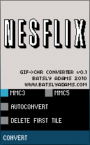

NESFlix Conversion Tool by Andrew Reitano / Batsly Adams
NESFlix by Don Miller / NO CARRIER
The NESFlix Conversion Tool is a cross platform program to create an NES compatible array of CHR pages from an animated GIF for use with NESFlix. Simply select a 128x128 4-color GIF and the tool will handle the conversion to 2BPP and pack the frames into a file that NESFlix can read natively.
MMC3 / MMC5
This option will affect the output format based on your intended mapper, MMC3 supports up to 64 frames / MMC5 supports up to 256. Be sure to use MMC3 if you intend on using the ROM on a Powerpak. The tool will automatically pad out any unused frames so that the CHR will align correctly with the ROM.
AUTOCONVERT
EXPERIMENTAL - Works on some GIFs, will perform 4 color conversion and 128x128 resizing. Use the Photoshop tutorial for best results.
DELETE FIRST TILE OPTION
Since the we using an entire CHR page to display the video there are no available blank tiles to fill the rest of the screen. This option allows you to delete the top left corner tile to provide a solid fill for the unused space.
Open up an MP4/AVI in Photoshop, use the trim settings until you create a loop that you're happy with. Don't forget to watch your frame count, 64 for MMC3 / 256 for MMC5.
Select "Save for Web & Devices", play with the dither settings to see what looks best. Be sure to set the output to GIF. Reduce to 4 colors. Uncheck "Transparency" otherwise the gif will result in only 3 useful colors. The size also needs to be changed to 128x128, these are the dimensons of a full CHR page. Don't worry about what the preview looks like in terms of color, as long as there are only 4 the tool will be able to properly create the CHR, the NES palette ultimately decides the how they will display.
Open up the NESFlix conversion tool, click the CONVERT button and select your file. This should create a <filename.gif>.chr in the current directory.
Edit the appropriate compilation file to include the new CHR movie.
Don't forget to edit the number of frames in the source to make sure the movie loops properly!
Compile and enjoy.